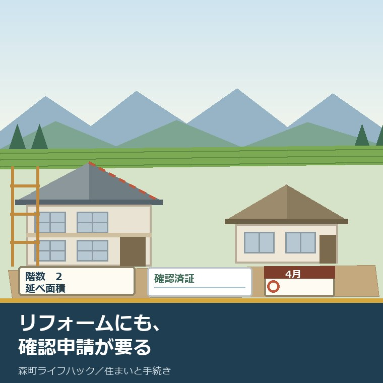
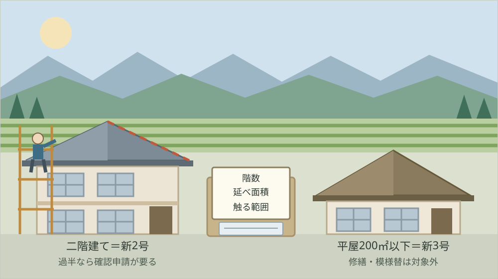
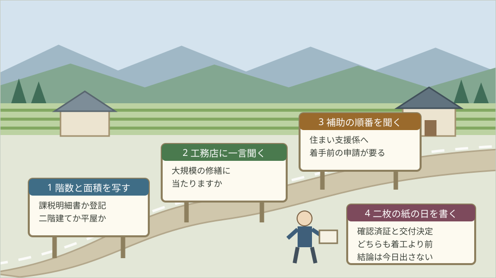

木造住宅の大規模リフォーム、2025年4月から確認申請が要る

この記事の要点
Q. 静岡県森町の実家を直して住み継ごうかと考えています。工務店に見積りを頼む直前です。何か新しく気をつけることはありますか。
A. 質問を一つ足してください。「これは大規模の修繕に当たりますか」です。国土交通省によれば2025年4月1日施行の見直しで、2階建ての木造住宅は新2号建築物になり、大規模の修繕・模様替に建築確認が必要になりました。境目は建築基準法第2条第14号の「主要構造部の一種以上について行う過半の修繕」です。確認済証の前に着工はできません。
静岡県周智郡森町（遠州森町）の実家を、直して住み継ぐか、手放すか。まだ決めきれないまま、とりあえず見積りだけ取ってみようとしている。この記事は、そういう方に向けて書いています。
見積りを頼むこと自体は、良い一歩です。金額が見えないと、家族の話し合いは進みません。私も、迷っている方には現地を見てもらうことを勧めています。
ただ、2025年4月から一つ変わったことがあります。工事の内容によっては、着工の前に建築確認の手続きが要るようになりました。木造の一戸建てで、これまで不要だった範囲です。
ここで大事なのは、「リフォームだから要らない」という思い込みが通じなくなった点です。新築の話ではありません。今ある家に手を入れるときの話です。
この記事では、国土交通省の資料と建築基準法の条文から確認できた線引きを並べ、森町の実際の住宅の数と重ねて、見積りを頼む前にすることを書きます。まだ直すと決めていない段階でも、階数と面積だけは先に見ておく価値があります。
公式情報から確定できること
まず、2026年8月19日時点で国土交通省、建築基準法の条文、森町公式サイト、静岡県の出先機関から確認できた事実を並べます。出典は記事の末尾に載せています。
一つ目。施行日が確定しています。国土交通省の報道発表（令和6年4月16日）の表題は「令和７年４月１日から省エネ基準適合の全面義務化や構造関係規定の見直しなどが施行されます！！」で、施行日は「令和７年４月１日（火）」と示されています。
二つ目。審査の対象になる規模が変わりました。国土交通省の「建築確認・検査の対象となる建築物の規模等の見直し」のページには、都市計画区域等の区域内について「平家かつ延べ面積200㎡以下の建築物以外の建築物は、構造によらず、構造規定等の審査が必要になりました。」と書かれています。
三つ目。区域の外にも線が引かれています。同ページには、都市計画区域等の区域外について「構造によらず、階数２以上または延べ面積200㎡超の建築物は建築確認の対象になりました。」と書かれています。
四つ目。リフォームについては、一文で言い切られています。同ページの「建築確認手続きの対象となる大規模修繕・模様替について」の項には、「木造戸建の大規模なリフォームは建築確認手続きが必要になります。」とあります。ページの最終更新日は令和6年10月25日です。
五つ目。ここが、この記事でいちばん大事な一文です。国土交通省住宅局の資料「木造戸建の大規模なリフォームに関する建築確認手続について」（令和7年2月21日時点）には、「今般の法改正により旧４号建築物から新２号建築物に移る２階建ての木造一戸建て住宅等の建築物において、大規模の修繕又は大規模の模様替を行う場合、新たに建築確認等の手続きが必要となる。」と書かれています。
六つ目。新しい区分の中身も図で示されています。同資料によれば、新2号建築物は「階数２以上 又は 延べ面積200㎡超」、新3号建築物（都市計画区域等の区域内）は「平家 かつ 延べ面積200㎡以下」です。
七つ目。確認が必要な工事の範囲も、区分によって違います。同資料の表によれば、新2号建築物は新築・増築・改築・移転に加えて大規模の修繕・大規模の模様替が確認の対象で、新3号建築物は新築・増築・改築・移転が対象です。
八つ目。条文の側でも確認できます。建築基準法第6条第1項第2号は「前号に掲げる建築物を除くほか、二以上の階数を有し、又は延べ面積が二百平方メートルを超える建築物」と定めています。
九つ目。同項第3号はこう書かれています。「前二号に掲げる建築物を除くほか、都市計画区域若しくは準都市計画区域（中略）内又は都道府県知事が関係市町村の意見を聴いてその区域の全部若しくは一部について指定する区域内における建築物」です。
十番目。そして、第6条第1項の本文が範囲を決めています。本文は「第一号若しくは第二号に掲げる建築物を建築しようとする場合（中略）これらの建築物の大規模の修繕若しくは大規模の模様替をしようとする場合又は第三号に掲げる建築物を建築しようとする場合」に確認を受けなければならないとしています。大規模の修繕が名指しされているのは第1号と第2号だけです。
十一番目。「大規模の修繕」の意味は法律に書いてあります。建築基準法第2条第14号は「大規模の修繕 建築物の主要構造部の一種以上について行う過半の修繕をいう。」、第15号は「大規模の模様替 建築物の主要構造部の一種以上について行う過半の模様替をいう。」と定めています。
十二番目。「主要構造部」も定義されています。同条第5号は「主要構造部 壁、柱、床、はり、屋根又は階段をいい、建築物の構造上重要でない間仕切壁、間柱、付け柱、揚げ床、最下階の床、回り舞台の床、小ばり、ひさし、局部的な小階段、屋外階段その他これらに類する建築物の部分を除くものとする。」としています。
十三番目。屋根については、国が具体例を示しています。前掲の国土交通省住宅局の資料には、「屋根ふき材のみの改修を行う行為は、法第２条第14号に規定する大規模の修繕及び同条第15号に規定する大規模の模様替には該当しないものと取り扱って差支えない。」と書かれています。
十四番目。カバー工法も同じ扱いです。同資料は「既存の屋根の上に新しい屋根をかぶせるようないわゆるカバー工法による改修は、法第２条第14号に規定する大規模の修繕及び同条第15号に規定する大規模の模様替には該当しないものと取り扱って差支えない。」としています。
十五番目。ただし、注意書きが付いています。同資料の注意欄には「屋根ふき材の改修を行うことで屋根を構成する全ての材を改修することになる場合、その改修部分の総水平投影面積が過半であれば、大規模の修繕又は大規模の模様替に該当する。」と書かれています。
十六番目。外壁についても例が出ています。同資料は「外壁の外装材のみの改修等を行う行為、又は外壁の内側から断熱改修等を行う行為は、法第２条第14号に規定する大規模の修繕及び同条第15号に規定する大規模の模様替には該当しないものと取り扱って差支えない。」としています。
十七番目。外壁にも例外があります。同資料は「ただし、外壁の外装材のみの改修等を行う行為であったとしても、当該行為が外壁の全てを改修することに該当する場合は、この限りでない。」とし、注意欄で「外装材の改修等を行うことで外壁の全ての材を改修することになる場合、その改修部分の総面積が過半であれば、大規模の修繕又は大規模の模様替に該当する。」と述べています。
十八番目。審査にかかる日数も条文にあります。建築基準法第6条第4項は、申請書を受理した場合、第1号または第2号に係るものは受理した日から35日以内、第3号に係るものは7日以内に審査すると定めています。
十九番目。着工の順番も決まっています。同条第8項は「第一項の確認済証の交付を受けた後でなければ、同項の建築物の建築、大規模の修繕又は大規模の模様替の工事は、することができない。」と定めています。
二十番目。森町にも都市計画区域があります。森町公式の「森町の都市計画について」に掲載された令和7年度版の抜粋資料（令和7年4月1日、建設課都市計画係）によれば、都市計画区域は平成3年3月29日決定で3,198ヘクタール、31.98平方キロメートル、行政区域の23.8パーセントです。
二十一番目。人口の分布は面積と違います。同資料によれば、行政区域は133.91平方キロメートル、行政人口は16,871人で、その内訳は都市計画区域内人口15,374人、用途地域内人口6,133人です（令和7年4月1日住民基本台帳）。
二十二番目。森町の住宅の数も公表されています。森町公式の森町耐震改修促進計画（令和8年度から令和12年度まで、令和8年4月策定）によれば、令和5年住宅・土地統計調査から推計した居住世帯のある住宅は6,020戸、耐震性を有する住宅は5,469戸、耐震化率は90.8パーセントです。
二十三番目。木造と非木造の内訳もあります。同計画によれば、木造は昭和56年以降が3,780戸、昭和55年以前が1,640戸の計5,420戸で耐震化率90.3パーセント、非木造は昭和56年以降520戸、昭和55年以前80戸の計600戸で98.1パーセントです。
二十四番目。直した実績も出ています。同計画によれば、昭和55年以前に建築された住宅1,640戸のうち、令和元年から令和5年の5年間に耐震改修を実施した戸数は180戸です。町の目標は令和12年度末までに耐震化率95パーセントとされています。
二十五番目。町の補助も残っています。森町公式の木造住宅の耐震改修事業（補強計画一体型）のページによれば、昭和56年5月以前に建築された木造住宅であること、1階部分の耐震評点を1.0未満から1.0以上にする補強工事であること、「静岡県耐震診断補強相談士」が作成した補強計画に基づくことが条件で、補助額は1戸につき上限1,200,000円です。ページの更新日は2026年4月1日です。
二十六番目。補助には順番の縛りがあります。森町公式の住宅・建築物の耐震補助制度のページには、「必ず工事着手前に補助申請をしてください。交付決定前に工事等に着手すると、補助が受けられません。」「補助金の支払いは、申請者が補助対象費用を支払った後になります。」「予算がなくなり次第、受付は終了します。」と書かれています。
二十七番目。県側の窓口も確認できました。静岡県袋井土木事務所のページによれば、同事務所は「静岡県中西部地域（御前崎市、菊川市、掛川市、袋井市、磐田市、森町）」を対象としており、建築住宅課が「建築確認と申請に関する事」を担当し、電話は0538-42-3294です。ページの更新日は令和8年7月16日です。

この絵で描きたかったのは、境目が「工事の名前」ではなく「どこまで触るか」にあるという点です。「屋根の葺き替え」という言葉は同じでも、中身は二通りあります。その二通りを分けるのが、過半という言葉です。
森町での暮らしに置き換えると、この改正は何を意味するか
ここからは、確認した事実を実際の場面に置き換えて考えます。ここからは私の見方が混じります。事実と分けて読んでください。
森町の実家で相談が多いのは、瓦屋根、外壁、そして風呂と台所です。山あいの集落では、屋根と外壁がまず傷みます。日当たりと風の当たり方が、市街地と違うからです。
この改正で影響が出るのは、2階建ての木造住宅です。階数が2以上であれば、延べ面積が小さくても新2号建築物にあたります。森町の実家の多くが、ここに入ります。
逆に、平家で延べ面積200平方メートル以下なら新3号です。この場合、大規模の修繕・模様替に確認申請は要りません。200平方メートルは約60坪ですから、平家の住宅ならたいてい収まります。
ここで数字を、私の商売の感覚に置き換えてみます。森町で昭和55年以前に建てられた住宅は1,640戸。令和元年から令和5年の5年間に耐震改修を実施したのは180戸です。
ざっくり割ると、年におよそ36戸です。1,640戸すべてに手が入るには、この速さのままだと単純計算で45年かかります。もちろん、途中で解体される家も、空き家のまま残る家もあります。
私が言いたいのは、速さが足りないということより、1件あたりの手間がこれ以上増えると止まる、ということです。年に36件という規模は、町の工務店が一軒ずつ回している数字です。
確認申請が加わると、費用と日数が増えます。建築基準法第6条第4項は、新2号建築物の審査を受理から35日以内と定めています。設計図書をそろえる時間は、この35日の前に別途かかります。
そして、順番の問題が二重になります。森町の耐震補助は工事着手前の申請が必要で、建築確認も確認済証の交付前は着工できません。どちらも「先に紙、あとに工事」です。
都市計画区域の話も、森町では少しややこしくなります。面積では町域の23.8パーセントですが、人口では16,871人のうち15,374人が区域内に住んでいます。区域の外にある実家も、確かにあります。
ただし、新2号建築物の判定に区域は関係しません。2階建てなら、区域の内でも外でも大規模の修繕・模様替は確認の対象です。ここを取り違えると、話が逆になります。
良い点
この改正について、私が良いと考える点を三つ挙げます。順番に理由を書きます。
一つ目。大きく手を入れる家の構造が、第三者に見られるようになったことです。旧耐震の木造住宅を大規模に直すとき、これまでは構造の確認が設計者と施工者の中で完結していました。外の目が一度入るのは、買い手にとっても相続人にとっても悪い話ではありません。
二つ目。線引きが具体例つきで公表されていることです。国土交通省は屋根、外壁、床、階段について、該当する場合と該当しない場合を図で示しています。「行政に聞かないと分からない」の範囲が、実際に狭くなりました。
三つ目。費用の見通しが早い段階で立つことです。確認申請が要るかどうかは、階数と工事範囲で決まります。見積りの前に判定できるので、後から「思ったより高い」となる場面を減らせます。私はこれを良い点として数えます。
付け加えると、屋根ふき材のみの改修とカバー工法が対象外とされた点も、実務では効きます。森町で相談の多い瓦の葺き替えは、多くがここに収まります。知らないまま諦める人が出ないよう、この点は繰り返し書いておきます。
注文したい点
その上で、一つの事業者として注文したい点も三つあります。批判ではなく、現場から見て足りないと感じる情報の話です。
一つ目。「過半」を誰がどう測るのかが、所有者側から見えません。屋根なら総水平投影面積、外壁なら総面積と示されてはいますが、傷んだ部分を開けてみないと範囲が確定しない工事もあります。着工後に過半だと分かった場合の扱いは、公表資料から確認できませんでした。
二つ目。森町公式のページに、この改正の案内が見当たりません。2026年8月19日時点で私が確認した範囲では、森町公式の住宅・建築物の耐震補助制度のページにも、木造住宅の耐震改修事業のページにも、確認申請が必要になる場合への言及がありませんでした。補助の申請と建築確認は、同じ工事の別々の手続きです。
三つ目。費用の目安がどこにも出ていません。確認申請の手数料、設計図書の作成費、構造の検討費が実際にいくらになるのかを、私は公表資料から確認できませんでした。金額が分からないと、直すか手放すかの判断が止まります。
加えて、これは注文というより疑問です。森町で年に何件、この確認申請が出ることになるのか、私には見当がついていません。年およそ36戸という耐震改修の実績が、この改正の後でどう動くのか。数字が出るのは、まだ先です。

この図で示したかったのは、階数を先に見るということです。2階建てかどうかは、家に行かなくても分かります。ここが決まると、次の質問が具体的になります。
対案・結論
では、今日できることを書きます。森町の実家を直すか迷っている方が、今日のうちに終えられる範囲に絞ります。
まず、固定資産税の課税明細書か登記事項証明書を出して、階数と床面積を書き写してください。手元になければ、家の写真を見て階数だけでも数えます。
次に、その紙に「2階建てか、平家か」を大きく書きます。2階建てなら新2号、平家で延べ面積200平方メートル以下なら新3号です。この一行が、以降の会話の土台になります。
それから、工務店に見積りを頼むとき、質問を一つ足してください。「この工事は建築基準法の大規模の修繕・模様替に当たりますか」です。当たる場合は、確認申請の費用と日数も見積書に入れてもらってください。
この質問が、今日できる小さな一歩です。専門用語を覚える必要はありません。「大規模の修繕に当たりますか」と聞ければ、答えられる業者は必ず答えます。
あわせて、森町役場の定住推進課住まい支援係（電話0538-85-6321）へ、耐震の補助が使えるかを聞いてください。昭和56年5月以前の木造住宅なら、補強計画一体型で上限120万円の補助があります。
その上で、結論は出さないでください。直すか、貸すか、手放すか、当面そのままにするか。今日の成果は、判断材料が一つ増えたことだけで十分です。
家族に残す記録
相談を受けていて、いちばん困るのは、建物の基本の数字が誰にも分からない状態です。築年も面積も分からないまま、見積りだけが手元にある。この形が、いちばん先へ進みません。
残す項目を挙げます。所在地、地番、家屋番号、建築年、階数、延べ面積、構造、屋根の材、外壁の材。ここまでが1枚目です。
続いて、直した履歴を書きます。いつ、どこを、どの業者が。屋根はふき材だけを替えたのか、下地まで替えたのか。この一行が、次の工事で効きます。
あわせて、手続きの状態を書きます。耐震診断を受けたか、補強計画があるか、補助を申請したか、交付決定が出たか、建築確認を出したか、確認済証が届いたか。紙の名前と日付をそのまま書いてください。
最後に、今日の日付と、確認に使った資料の名前を書いてください。制度も補助額も変わります。いつ時点の話かが分かる記録だけが、来年も使えます。
大石の視点
ここからは、私の考えです。公表された事実とは分けて読んでください。
私は磐田市で小さな不動産の仕事をしていて、実家をどうするか決めていない方の相談を一件ずつ受けています。森町の家は、直せば十分に住めるものが多いと思っています。基礎と骨組みが素直な家が残っているからです。
同時に、このままでは続かないとも思っています。直せる家があっても、直せる職人と、手続きを通せる設計者が町の近くにいなければ、話は動きません。担い手の問題は、屋根の上だけの話ではありません。
今回の改正について、私は反対ではありません。大きく手を入れる家の構造を誰かが見る仕組みは、必要だと考えています。ただ、手間が増えた分は、必ずどこかが負担します。
だから私は、この改正を「工務店の話」ではなく「持ち主の段取りの話」として読んでいます。先に紙、あとに工事。この順番を持ち主が知っているかどうかで、同じ家でも進み方が変わります。
ここには、私の商売の実感も混じっています。制度は知っている人だけが得をする。それが一番よくないと私は思っています。だからこの記事では、条文の番号と、該当しない例まで書きました。
建物の年代の読み方は森町の寺院を宗派から見る記事と森町の神社を建物の年代から見る記事に書きました。実家の立地の確かめ方は森町の住所選びを通勤・買い物・災害地図で重ねる記事に、直さずに壊す場合の日付の数え方は解体するなら1月1日から逆算する記事にまとめてあります。
実家の名義、境界、農地、道路まで含めて順に整理したい方は、ふじがおか実家カルテの森町相談窓口もご利用ください。売ると決めていなくても使える整理の道具として作っています。
まとめ
- 国土交通省の報道発表（令和6年4月16日）によれば、施行日は「令和７年４月１日（火）」（2026年8月19日確認）
- 国土交通省によれば、都市計画区域等の区域内では「平家かつ延べ面積200㎡以下の建築物以外の建築物は、構造によらず、構造規定等の審査が必要になりました。」
- 国土交通省によれば、都市計画区域等の区域外では「構造によらず、階数２以上または延べ面積200㎡超の建築物は建築確認の対象になりました。」
- 国土交通省住宅局の資料によれば、旧4号建築物から新2号建築物に移る2階建ての木造一戸建て住宅等で大規模の修繕・模様替を行う場合、新たに建築確認等の手続きが必要
- 同資料によれば、新2号建築物は「階数２以上 又は 延べ面積200㎡超」、新3号建築物（都市計画区域等の区域内）は「平家 かつ 延べ面積200㎡以下」
- 建築基準法第2条第14号は「大規模の修繕」を「建築物の主要構造部の一種以上について行う過半の修繕」と定義
- 建築基準法第2条第5号は「主要構造部」を「壁、柱、床、はり、屋根又は階段」と定義（構造上重要でない間仕切壁等を除く）
- 国土交通省住宅局の資料によれば、屋根ふき材のみの改修とカバー工法は大規模の修繕・模様替に該当しないものと取り扱って差支えない
- 同資料の注意欄によれば、屋根を構成する全ての材を改修し、その総水平投影面積が過半であれば該当する
- 同資料によれば、外壁の外装材のみの改修や内側からの断熱改修は該当しないが、外壁の全てを改修し総面積が過半であれば該当する
- 建築基準法第6条第4項によれば、第1号・第2号は受理から35日以内、第3号は7日以内に審査
- 建築基準法第6条第8項は、確認済証の交付を受けた後でなければ大規模の修繕・模様替の工事はできないと定めている
- 森町公式によれば、森町の都市計画区域は3,198ヘクタール（31.98平方キロメートル、行政区域の23.8パーセント）、行政人口16,871人のうち都市計画区域内人口は15,374人（令和7年4月1日）
- 森町耐震改修促進計画によれば、居住世帯のある住宅6,020戸のうち耐震性を有するのは5,469戸で耐震化率90.8パーセント、木造は5,420戸のうち昭和55年以前が1,640戸
- 同計画によれば、昭和55年以前の住宅1,640戸のうち令和元年から令和5年に耐震改修を実施したのは180戸、目標は令和12年度末に95パーセント
- 森町公式によれば、木造住宅の耐震改修事業（補強計画一体型）の補助額は1戸につき上限1,200,000円で、必ず工事着手前に補助申請が必要、支払いは事後、予算がなくなり次第受付終了
- 静岡県袋井土木事務所は御前崎市・菊川市・掛川市・袋井市・磐田市・森町を対象とし、建築住宅課が「建築確認と申請に関する事」を担当（電話0538-42-3294）
よくある質問
Q1. 屋根を葺き替えるだけでも建築確認申請が必要になりますか。
A1. 国土交通省の資料によれば、屋根ふき材のみの改修や、既存の屋根の上に新しい屋根をかぶせるカバー工法は、大規模の修繕・模様替には該当しないものと取り扱って差支えないとされています。ただし屋根を構成する全ての材を改修し、その総水平投影面積が過半になる場合は該当します。
Q2. 森町の実家は2階建ての木造です。この改正の対象になりますか。
A2. 建築基準法第6条第1項第2号は「二以上の階数を有し、又は延べ面積が二百平方メートルを超える建築物」と定めています。2階建てであれば面積にかかわらず新2号建築物にあたり、大規模の修繕・模様替をするときは確認申請が必要です。平家で200平方メートル以下なら新3号です。
Q3. 確認申請にはどれくらいの日数がかかりますか。
A3. 建築基準法第6条第4項は、第1号・第2号の建築物は申請書を受理した日から35日以内、第3号は7日以内に審査すると定めています。同条第8項により、確認済証の交付を受けた後でなければ工事に着手できません。森町の耐震補助も工事着手前の申請が必要です。
最後に一つだけ。ここに書いた施行日、区分、条文、補助額、窓口は、いずれも2026年8月19日時点で公表されている内容です。確認申請の手数料と設計図書の作成費の目安、着工後に過半だと判明した場合の扱い、森町での確認申請の実際の受付件数、森町公式サイトにおけるこの改正の案内の有無、指定確認検査機関を使う場合の日数は、公表資料からは確認できていません。動く前に、必ず静岡県袋井土木事務所建築住宅課および森町役場定住推進課住まい支援係へご確認ください。
参考にした公式情報
- 建築確認・検査の対象となる建築物の規模等の見直し／国土交通省（都市計画区域・準都市計画区域・準景観地区等内について「平家かつ延べ面積200㎡以下の建築物以外の建築物は、構造によらず、構造規定等の審査が必要になりました。」「省エネ基準の審査対象も同一の規模となります。」とされていること、区域外について「構造によらず、階数２以上または延べ面積200㎡超の建築物は建築確認の対象になりました。」とされていること、「建築確認手続きの対象となる大規模修繕・模様替について」の項に「木造戸建の大規模なリフォームは建築確認手続きが必要になります。」と書かれていること、「周知チラシ」「木造戸建の大規模なリフォームに関する建築確認手続について」「リフォームにおける建築確認要否の解説事例集」が掲載されていることを2026年8月19日に確認。最終更新日 令和6年10月25日）
- 木造戸建の大規模なリフォームに関する建築確認手続について（令和7年2月21日時点）／国土交通省住宅局（「今般の法改正により旧４号建築物から新２号建築物に移る２階建ての木造一戸建て住宅等の建築物において、大規模の修繕又は大規模の模様替を行う場合、新たに建築確認等の手続きが必要となる。」と書かれていること、新2号建築物が「階数２以上 又は 延べ面積200㎡超」、新3号建築物（都計区域等の区域内）が「平家 かつ 延べ面積200㎡以下」と図示されていること、新2号建築物の確認が必要な工事に新築・増築・改築・移転および大規模の修繕・大規模の模様替が含まれ新3号建築物は新築・増築・改築・移転であること、「屋根ふき材のみの改修を行う行為は、法第２条第14号に規定する大規模の修繕及び同条第15号に規定する大規模の模様替には該当しないものと取り扱って差支えない。」「既存の屋根の上に新しい屋根をかぶせるようないわゆるカバー工法による改修は、法第２条第14号に規定する大規模の修繕及び同条第15号に規定する大規模の模様替には該当しないものと取り扱って差支えない。」とされていること、注意欄に「屋根ふき材の改修を行うことで屋根を構成する全ての材を改修することになる場合、その改修部分の総水平投影面積が過半であれば、大規模の修繕又は大規模の模様替に該当する。」と書かれていること、外壁について「外壁の外装材のみの改修等を行う行為、又は外壁の内側から断熱改修等を行う行為は…該当しないものと取り扱って差支えない。」「ただし、外壁の外装材のみの改修等を行う行為であったとしても、当該行為が外壁の全てを改修することに該当する場合は、この限りでない。」とされ、注意欄に「外装材の改修等を行うことで外壁の全ての材を改修することになる場合、その改修部分の総面積が過半であれば、大規模の修繕又は大規模の模様替に該当する。」と書かれていることを2026年8月19日に確認）
- 令和７年４月１日から省エネ基準適合の全面義務化や構造関係規定の見直しなどが施行されます！！／国土交通省（発表日が令和6年4月16日であること、施行日が「令和７年４月１日（火）」とされていること、原則全ての新築住宅・非住宅への省エネ基準適合の義務付けと、建築物の仕様等に応じて求める「柱の太さや壁の量」等に係る構造関係規定の整備が施行内容として示されていることを2026年8月19日に確認）
- 建築基準法（昭和二十五年法律第二百一号）／e-Gov法令検索（第2条第5号が「主要構造部 壁、柱、床、はり、屋根又は階段をいい、建築物の構造上重要でない間仕切壁、間柱、付け柱、揚げ床、最下階の床、回り舞台の床、小ばり、ひさし、局部的な小階段、屋外階段その他これらに類する建築物の部分を除くものとする。」と定めていること、第2条第14号が「大規模の修繕 建築物の主要構造部の一種以上について行う過半の修繕をいう。」、第15号が「大規模の模様替 建築物の主要構造部の一種以上について行う過半の模様替をいう。」と定めていること、第6条第1項本文が第1号・第2号の建築物について建築のほか「これらの建築物の大規模の修繕若しくは大規模の模様替をしようとする場合」に確認を受けなければならないとしていること、第6条第1項第2号が「前号に掲げる建築物を除くほか、二以上の階数を有し、又は延べ面積が二百平方メートルを超える建築物」であること、同項第3号が都市計画区域若しくは準都市計画区域内等における建築物であること、第6条第4項が第1号または第2号は受理した日から35日以内、第3号は7日以内に審査すると定めていること、第6条第8項が「第一項の確認済証の交付を受けた後でなければ、同項の建築物の建築、大規模の修繕又は大規模の模様替の工事は、することができない。」と定めていることを2026年8月19日に確認）
- 森町の都市計画について／静岡県森町（令和7年度版「森町の都市計画」について【抜粋】が掲載されていること、同資料が令和7年4月1日付で建設課都市計画係の作成であること、行政区域が133.91平方キロメートル、行政人口が16,871人（都市計画区域内人口15,374人、用途地域内人口6,133人。令和7年4月1日住民基本台帳）であること、都市計画区域が平成3年3月29日決定で3,198ヘクタール・31.98平方キロメートル・23.8パーセントであること、担当が建設課都市計画係（電話0538-85-6322）であることを2026年8月19日に確認。ページ更新日 2025年4月15日）
- 森町耐震改修促進計画／静岡県森町（令和8年度から令和12年度までの期間の計画を令和8年4月に策定したこと、対象区域が森町全域であること、居住世帯のある住宅6,020戸のうち耐震性を有する住宅が5,469戸で耐震化率90.8パーセントであること、木造が昭和56年以降3,780戸・昭和55年以前1,640戸の計5,420戸で耐震化率90.3パーセント、非木造が計600戸で98.1パーセントであること、昭和55年以前に建築された住宅1,640戸のうち令和元年から令和5年に耐震改修を実施した戸数が180戸であること、耐震化率の目標が令和12年度末に95パーセントであること、担当が定住推進課住まい支援係（電話0538-85-6321）であることを2026年8月19日に確認。ページ更新日 2026年4月1日）
- 木造住宅の耐震改修事業(補強計画一体型)／静岡県森町（補助対象が「昭和56年5月以前に建築された木造住宅である。」「現在の1階部分の耐震評点が1.0未満のものを1.0以上にする補強工事である。」「『静岡県耐震診断補強相談士』が作成した補強計画に基づき行われる補強工事である。」のすべてを満たすことであること、補助額が1戸につき上限1,200,000円であること、条件が「耐震改修工事期間中に、耐震改修の宣伝等を行うこと。」であること、申請が定住推進課窓口に直接であること、担当が定住推進課住まい支援係（電話0538-85-6321）であることを2026年8月19日に確認。ページ更新日 2026年4月1日）
- 住宅・建築物の耐震補助制度／静岡県森町（木造住宅についてわが家の専門家診断事業、木造住宅の耐震改修事業（補強計画一体型）、木造住宅の除却助成事業の三つが挙げられ、ほかに建築物の耐震診断事業、住宅屋根耐風改修助成事業、ブロック塀等の除却・建替え事業が掲載されていること、注意事項として「必ず工事着手前に補助申請をしてください。交付決定前に工事等に着手すると、補助が受けられません。」「補助金の支払いは、申請者が補助対象費用を支払った後になります。そのため、一時的に費用全額のご負担が生じます。」「予算がなくなり次第、受付は終了します。」と書かれていること、担当が定住推進課住まい支援係（電話0538-85-6321）であることを2026年8月19日に確認。ページ更新日 2026年4月1日）
- 袋井土木事務所 お問合わせ窓口／静岡県（建築住宅課の担当が「建築確認と申請に関する事、建築士事務所や宅建業の登録、県有建築物の営繕工事、建築物の地震対策、県営住宅の入居」であり電話が0538-42-3294であること、同事務所が「静岡県中西部地域（御前崎市、菊川市、掛川市、袋井市、磐田市、森町）」を対象としていることを2026年8月19日に確認。ページ更新日 令和8年7月16日）

最終確認日：2026-08-19 ／ 本記事は公表情報と執筆者の見解を分けて記載しています。確認申請の手数料と設計図書の作成費の目安、着工後に過半だと判明した場合の扱い、森町での確認申請の受付件数、指定確認検査機関を使う場合の日数は公表資料から確認できていません。個別の工事が大規模の修繕・模様替に当たるかどうかは建築士および特定行政庁の判断によります。動く前に、必ず静岡県袋井土木事務所建築住宅課および森町役場定住推進課住まい支援係へご確認ください。